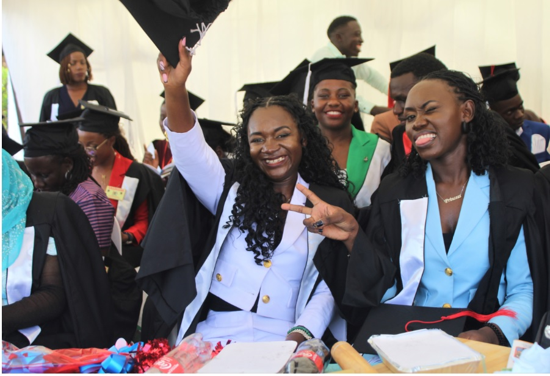
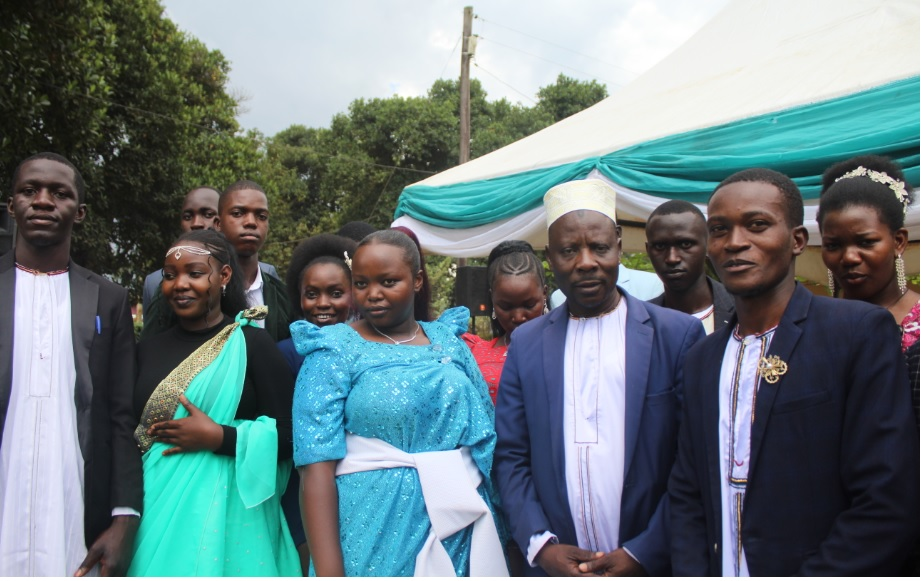
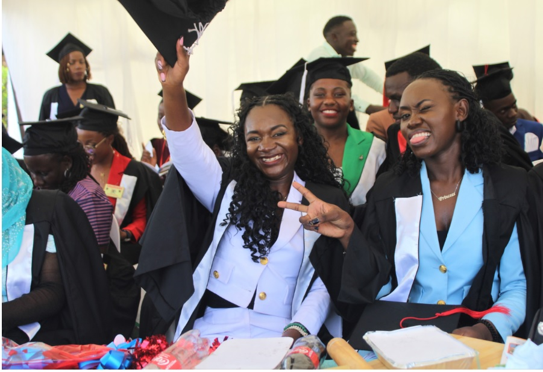
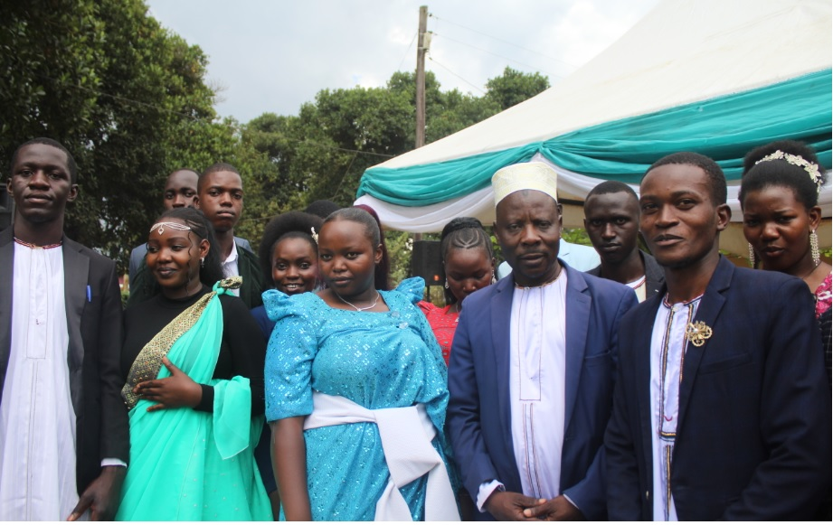

Community News
Community Leaders Attend a Climate Change Workshop at Kasangati
The Kasangati Deputy Mayor and a team of Councilors and Community leaders in different areas attended a workshop on the issue of Climate change in Kasangati Town.
The councilors who attended were asked to think of ideas of how to handle these issues.
Read moreCommunity News
Kijani Mwendo United With The Alliance Of Smaller Political Parties Of Uganda Members To Shape Up The Green Manifesto


Mr. Bakyayita Kentos Thomas - TB under his NGO hosted a team of leaders from among the 13 out of the 26 Political Parties in Uganda in an intensive meeting at Kijani Mwenod Uganda Offices in Nangabo Trading Centre to edit, shape and streamline their Green Manifesto. This is to be used to advocate for and make a positive influence in matters related to climate change, Gender Equity and equality, sustainable Energy/Renewable energy, and Environmental governance. These different Political Parties under their ASP umbrella chose to come together in the matters mentioned as they found them to affect the well being of Ugandans yet they are overlooked.
Watoto Church Family in Kasangati saves lives through a Free Medical Camp
Watoto Church Family, through its cell groups and friends, organized a highly successful one-day annual medical camp at Wampewo Pitch.
Mayor Tom Muwonge who attended the event praised Watoto Church Family for their initiative.
Read moreFeature Story
Pr. Geoffrey Angwako- Footballer turned into Committed Pastor
Pr. Goeffrey Angwako is the founder of Oasis of Hope found in Kasangati and he has been serving faithfully for many years. Most of his community peers remember him as a gifted football player
Read moreCommunity Events
Precious Gift Gayaza Holds their First Confirmation Service and Bishop's Visit
Precious Gift Nursery and Primary School in Gayaza held a milestone event hosting Bishop Moses Banja, the Rt. Rev. Of Namirembe Diocese for a pastoral visit. The Day's activities included the school's first ever confirmation ceremony, launch of the school building's architectural plan, nursery children graduation and a dedication service for primary seven canidates.
The church of Uganda clergy and community leaders joined parents and friends of the school for the momentous ocassion.
Read moreKasangati Court Open Day - Community Members aired their concerns
Kasangati Chief Magistrate's court held a Kasangati Court Open Day event together with IWLA. The day was majorly about hearing from the community regarding challenges they face with the court business and their judicial cases that were troubling them.
Read morePastors' Wives and Female Pastors held a Wake Up Call Conference
Pastor Esther Biyinzika together with fellow Nangabo Born Again Pastors' Fellowship leaders organised an impactfuk Conference deliverying a wake up message for the women in church. The facilitators of the day delivered a message calling women to spear head in waking up the fathers of the nation.
Read more